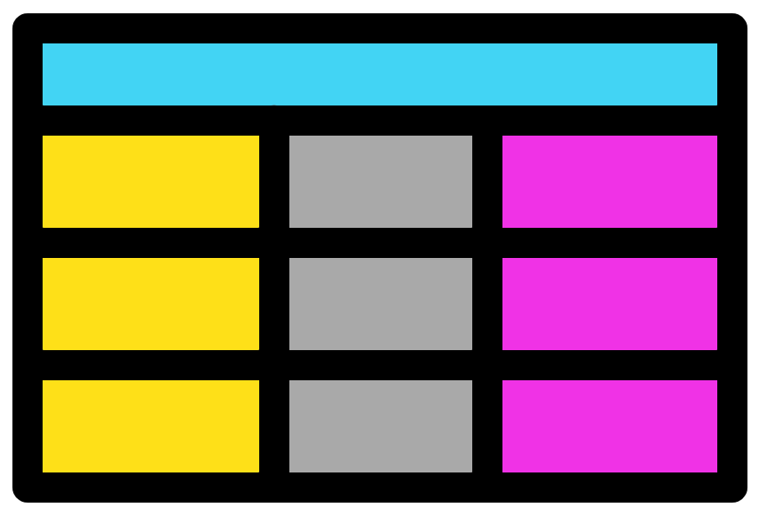
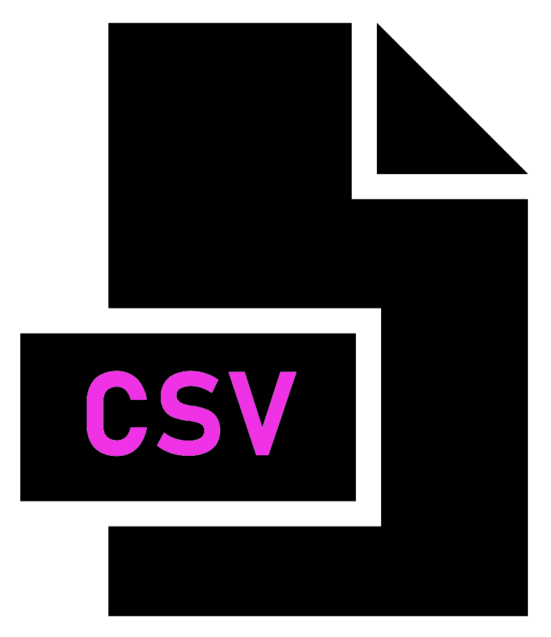
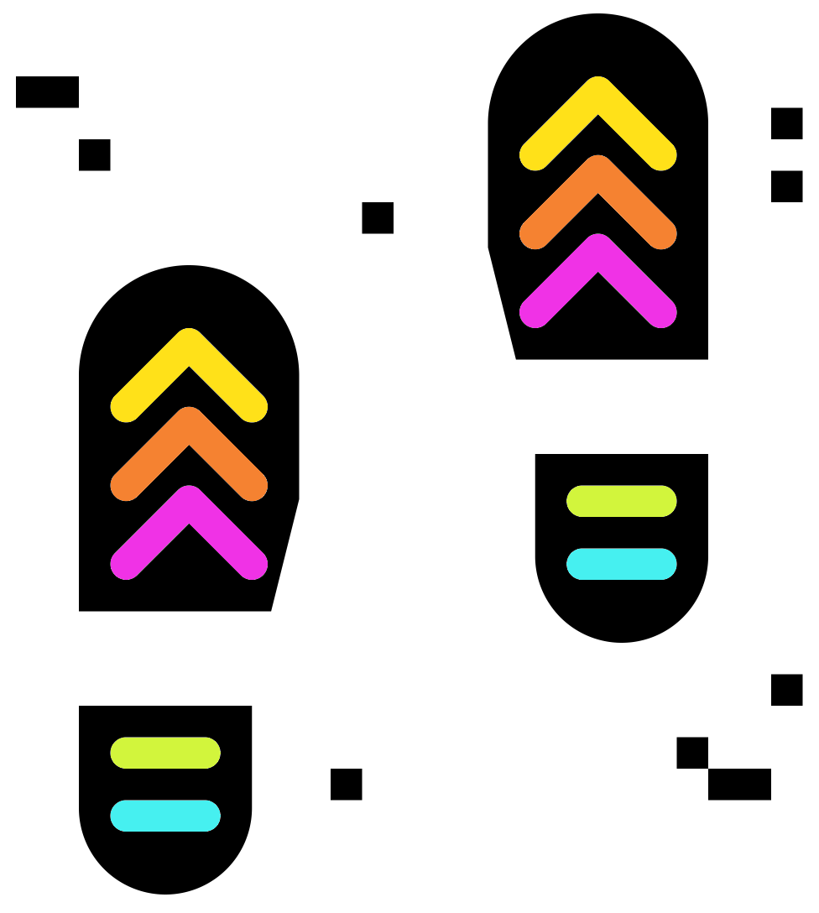
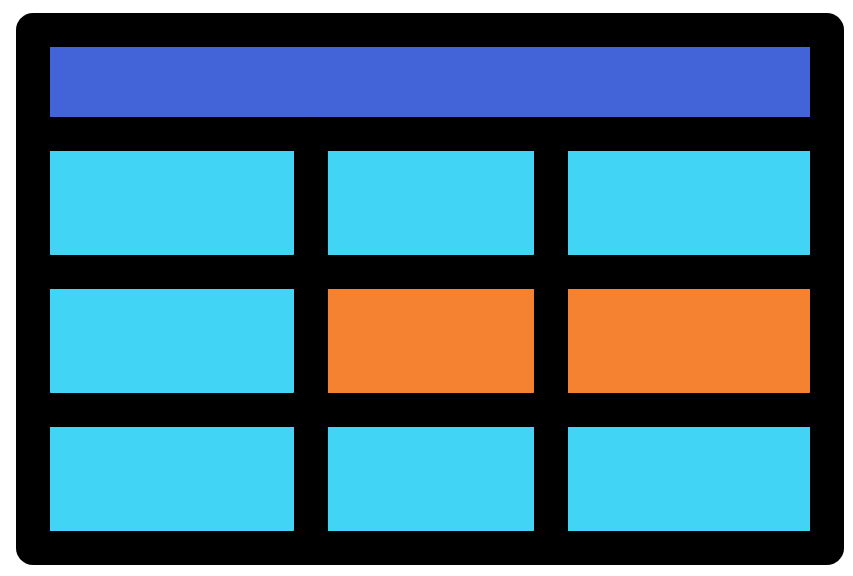

liv_beaches_df <- read.csv("Liverpool_beaches.csv")(PART*) Files & Subsetting
Files and subsetting data

Reading from a file
In chapter 4 we created data frames with R functions. This was useful to help understand how data frames work in R. However, in real life you will most likely not do this very often. Instead you will have data files you need to analyse with R.
You can get your data into R by having R read your file.
Directory and file setup
Prior to using a file you will need to acquire it.
- Make a directory/folder called “Chapter_6” within your main directory/folder for this workshop.
- Download the file Liverpool_beaches.csv into “Chapter_6”.
- Set your working directory to this new directory (Directories). You will stay here for this chapter.
Viewing the file
The next task to carry out is to read in the file “Liverpool_beaches.csv”. Before reading in the file we can check the contents of the file. This can be carried out by opening it with notepad (or similar text tool) or viewing the file with RStudio.
To view the file with RStudio:
- Use the Files pane of the MISC window to navigate to the directory containing the file
- Click on the file name and then click “View File”
- This will open a tab in the Source window matching the file name
You will notice that the values are separated by commas as this is a “comma separated value” (.csv) file. Additionally, this is the same data as the “beach_df_2” data frame you created in the chapter 5 exercises.
Note: Create a new R script file called “3-Files_and_subsetting.r” for this chapter’s scripts.
read.csv()

There are various functions to read in files into R. My favourite is read.csv(). Use this function to read in the file “Liverpool_beaches.csv”:
Have a look at the newly created data frame. Is it how you would like it?
The row names are empty and the beach names are in the first column. We’ll fix this so the beach names are the row names. This can be carried out by including the option row.names = 1 to specify the 1st column will be the row names:
liv_beaches_df <- read.csv("Liverpool_beaches.csv", row.names = 1)We now know how to read in a csv file with read.csv.
TSV files

For our next task we will read a tab separated file.
Download Global_eco_footprint.tsv into your “Chapter_6” folder/directory. This file contains the 2023 global ecological footprint information. The ecological footprint measures the ecological assets that a given population requires to produce the natural resources it consumes.
More info can be found in the following link: https://www.kaggle.com/datasets/jainaru/global-ecological-footprint-2023.
Use read.csv() to read in the file. We’ll set the option row.names = 1 again but also include the option sep = "\t". This option specifies the columns are separated (sep) by tabs ("\t").
global_eco_footprint <- read.csv("Global_eco_footprint.tsv",
row.names = 1, sep = "\t")Look at the resulting data frame and you will notice the column names have been changed by R. This is annoying but thankfully there is an easy fix. Read in the data again with the inclusion of the parameter check.names = FALSE. This will stop the function read.csv() from ‘checking’ and ‘fixing’ the column names. I always use this option.
global_eco_footprint_df <- read.csv("Global_eco_footprint.tsv",
row.names = 1, sep = "\t",
check.names = FALSE)Excel files and R
You may want to open excel files with R. Normally to do this I open the file in excel and save it as a .csv or a tab separated file and read this into R. Alternatively there are R packages that can directly read in excel files. If this is something you would like to do you can look at the following package:
https://readxl.tidyverse.org/
An important note is that reading in a file into R will not change the file. You are creating a new R object. Modifying this object will not alter the original file. Later in the materials we will look into how to create new files or overwrite files by writing.
Subsetting data

R allows you to specify specific points in R objects. This is one of the primary reasons R is so useful and flexible. With good use of assignment operators this allows for the subsetting of variables.
Vectors

We will start with vectors. Before carrying out and subsetting let us create some new vectors. We will use a new function to create these, seq().
Tip: Look at the resulting vectors and, use ?seq() or search online to understand the seq() function better.
even_seq <- seq(from = 0, to = 8, by = 2)
odd_seq <- seq(from = 1, to = 9, by = 2)
long_seq <- seq(from = 10, to = 300, by = 10)Grand! Now let us subset the vectors with square brackets [].
Foundational vector subsetting
Vectors are one-dimensional, we therefore provide the square brackets with one number or one range of numbers. The number/s we provide in the square brackets are the index.
Try out indexing/subsetting the vectors.
even_seq[2]
odd_seq[1]
long_seq[10]
even_seq[2:3]
odd_seq[1:4]
long_seq[21:24]
long_seq[24:21]
even_seq[c(2,3)]
odd_seq[c(1,3,2,5)]
long_seq[c(1,21,21:24,24:21,1)]
#As long as the contents within the [] equal numbers they will work
even_seq[seq(from = 1, to = 3, by = 2)]
even_seq[seq(from = 0, to = 5, by = 3)]
long_seq[seq(from = 1, to = 19, by = 2)]
even_seq[1*2]
odd_seq[2/1]
long_seq[(1:10)*2]Subsetting and NAs
The vectors even_seq and odd_seq have the indexes 1,2,3,4, and 5 as they each contain 5 scalars. What if we try to use a higher number to index than is available?
even_seq[6]
even_seq[c(4,7)]
odd_seq[3:9]As you can see the above all work with no complaints. Any indexes that are out of range will return a NA value. NA stands for ‘Not Available’. We will not go into how NA works in R too much. The most important thing to know about NA is that you will most likely get NA if you use operators or functions with NA. Below are a few examples:
#Will give NA
1 + NA
2 - NA
even_seq[2] * NA
odd_seq[5] / NA
#mean() function without NA
mean(even_seq[2:5])
#mean() function with NA
mean(c(1,2,3,4,5,NA))
mean(even_seq[2:7])Inverted subsetting
Above we subsetted vectors by specifying which indexes we want. We can also specify which indexes we don’t want:
even_seq[-2]
odd_seq[-3:-5]
long_seq[c(-1,-2,-6)]Subsetting with rep()
The rep() function will replicate a scalar/vector a specified amount of times. We will use this function to overwrite our previously created variables with longer versions:
#Replicate vector even_seq 2 times
rep(x = even_seq, 2)
#Replicate vector even_seq 4 times and then assign even_seq as the newly created vector
even_seq <- rep(x = even_seq, 4)
#More examples
odd_seq <- rep(x = odd_seq, 4)
long_seq <- rep(x = long_seq, 3)Logical subsetting
Logical operators can be used as indexes to subset vectors. Having a logical expression (i.e. 1 > 2) as the index will cause all TRUE positions to be included and all FALSE positions to be excluded.
Tip: If it is difficult to deduce what the below commands are doing you can run the part in the square brackets by itself. Remember if you highlight code in the script editor it will only run that part, excluding unhighlighted parts of script in the same line.
even_seq > 3
even_seq[even_seq > 2]
odd_seq[odd_seq <= 1 ]
long_seq <- long_seq[long_seq < 50]Modulus (%%)
We will quickly look at a new operator, %%. This is the modulus operator, it divides two numbers and gives the remainder of the division.
With the modulus operator, logical expressions, and subsetting we can extract even or odd numbers from a vector:
#First some basic modulus examples
2%%2
3%%2
#Create a vector with numbers 0 to 9
single_digit_vec <- 0:9
#Extract even numbers then odd numbers from the vector
#We carry this out by determining if numbers are divisible by 2 or not
even_seq <- single_digit_vec[(single_digit_vec %% 2) == 0 ]
odd_seq <- single_digit_vec[(single_digit_vec %% 2) != 0]
#We can determine which numbers in a vector are divisible by any specific number
#Divisible by 3
#remember variable names cannot start with numbers
divis_3_vec <- single_digit_vec[(single_digit_vec %% 3) == 0]
#Divisible by 7
divis_7_vec <- single_digit_vec[(single_digit_vec %% 7) == 0]
#Try out other numbers!Data frames
Data frames can be subset similar to vectors. As with vectors you can use []. Additionally, $ can be used to subset data frames.
Square brackets must be provided indexes for rows and for columns. The structure for this is df[row,column]. It is very useful to remember that R always wants rows first then columns second.
Read in Parks biodiversity data frame
To practice subsetting data frames with square brackets we will read in a new file called parks_biodiveristy.csv. This contains the number of different species of various groups (Bird, Mammal, etc.) in US national parks. Data can be found:
https://www.kaggle.com/datasets/nationalparkservice/park-biodiversity
#Read in the file
parks_df <- read.csv("parks_biodiveristy.csv", check.names = FALSE,
row.names = 1)
#View the resulting object
parks_df
#View its column names
colnames(parks_df)Foundation data frame subsetting
Now for some subset commands:
#Scalar from the 1st row and 1st column
parks_df[1,1]
#Row names and column names can be used for indexing
#Scalar from the row called YOSE and the column called Amphibian
parks_df["YOSE","Amphibian"]
#More examples
parks_df[1:10,2]
parks_df[1:10,"State"]
parks_df[3,2:4]
parks_df["SAGU",2]
parks_df[1:10,"Bird"]
parks_df[c(1,3,5,6),c("Bird","Fish")]Subsetted object
Depending on how you subset a data frame you may get a scalar, vector, or data frame. Below describes which you will get based on the subsetting.
- Scalar:
- Indexing to get a single value by choosing one row and one column.
- E.g.
parks_df[1,1]
- Vector:
- Indexing so you get multiple values from one column. This occurs as each column is in essence a vector.
- E.g.
parks_df[1:10,2]
- Data frame:
- Indexing so you get multiple values from a row or multiple rows. Subsetting a data frame like this provides you with a data frame.
- E.g.
parks_df[3,2:4]orparks_df[3:4,2:4]
head()
A quick function to subset a data frame is head(). By default it will return the first 6 rows.
#Return first 6 rows
head(parks_df)
#Return first 10 rows
head(parks_df, 10)The data frame is quite large. We will therefore use the head() function and the assignment operator to make the data frame smaller for further examples.
parks_df <- head(parks_df, 20)Subset all rows or columns
To return all the rows of the specified columns you can leave the part before the comma empty. Similarly you can leave the part after the comma empty to return all of the columns of the specified rows. Leave both sides empty and you will get the entire data frame.
parks_df[,]
parks_df[,2]
parks_df[3,]
parks_df[,"State"]
parks_df[2:4,]Subsetting columns with $
The sign $ allows you to indicate which column you would like from the data frame. This is done like so:
parks_df$State
parks_df$Amphibian
parks_df$FishYou will notice that the above commands return vectors. We can therefore subset these vectors with []:
parks_df$State[2]
parks_df$Amphibian[2]
parks_df$Fish[4:7]Vector functions
Below are a selection of useful functions that can be used on vectors.
#Sum the values of a numeric vector
sum(parks_df$Mammal)
#Mean of the values of a numeric vector
mean(parks_df$Mammal)Data frame functions
The above functions are useful but limiting if you are working with data frames. Thankfully there are also many functions used specifically for data frames (they can also be used for matrices).
#Sum numeric columns
colSums(parks_df[,3:6])
#Sum numeric rows
rowSums(parks_df[,4:5])
#Mean of numeric columns
colMeans(parks_df[,3:6])
#Mean of numeric rows
rowMeans(parks_df[,4:5])
#Summary information for each column
#This works for string and numeric columns with different outputs
summary(parks_df)Try out some of the above commands with the entire data frame. Do they give an error? Is so, why?
Transpose with t()
Before we learn how to write data to a file I will introduce one more data frame associated function. t() which stands for transpose:
parks_df[3:5]
t(parks_df[,3:5])
summary(t(parks_df[,3:5]))Try the above commands without subsetting the data frame. What is happening and why?
You cannot transpose a whole data frame which has columns of different classes. Columns must be homogeneous (one class) and trying to transpose a data frame with heterogeneous classes breaks this.
Writing to a file
Before we write data to a file we will create a new data frame from “parks_df”.
First I like to create a new variable from our old variable if there are many steps. This means if we make a mistake we can go back and recreate the new variable.
parks_t_df <- parks_dfNext step we will create a new column called “Total_species”.
Note: I am including many ways to subset columns as reminders. Normally I wouldn’t have so many different ways in one command.
Note: We are using “_” instead of spaces as R doesn’t particularly like spaces in column names. We will see how to use spaces later.
parks_t_df$Total_species <- rowSums(parks_df[,3:8])The final step before writing is to transpose the data frame leaving out the Park name and State columns:
#Transpose dataframe
parks_t_df <- t(parks_t_df[,3:9])
#Check structure
str(parks_t_df)
#It is not a dataframe
#Let us therefore convert it to a data frame
parks_t_df <- as.data.frame(parks_t_df)
#Structure check
str(parks_t_df)After all that let us write the data frame to a file called “Park_species_info.csv”. When reading from a file I prefer read.csv(), however when writing to a file I prefer write.table(). With this function we will include the option sep="," to have commas as the column separators. We will also include the option col.names=NA to create an empty space above the row names. If this was not included then the first column name would be above the row names.
write.table(parks_t_df, file = "Park_species_info.csv", sep = ",", col.names=NA)Have a look at the file contents with RStudio.
Let’s do it one more time with the Global ecological footprint info. First read in the file again in case you do not have it. Then transpose the data frame and ensure the resulting object is a data frame:
#Read in
global_eco_footprint_df <- read.csv("Global_eco_footprint.tsv",
row.names = 1, sep = "\t",
check.names = FALSE)
#Transpose ensuring output is a data frame
global_eco_footprint_t_df <- as.data.frame(t(global_eco_footprint_df))Write the data frame to a tab delimited file (.tsv). This time we will make it so the row and column names are not surrounded by quotes:
write.table(global_eco_footprint_t_df,
"Global_eco_footprint_transposed.tsv",
sep = "\t",
col.names=NA,
quote = FALSE)Files & subsetting MCQs
Grand! With the fundamentals of reading, subsetting data frames, and writing covered it is time to carry out some exercises after the below MCQs.
Try choosing the correct answer for each of the below MCQs.
- Which function can be used to transpose a data frame?
- Which function can be used to import the contents of a file into a R object?
- Which function can be used to export the contents of an R object into a file?
- For
read.csv()orwrite.table()which option allows you to read/write comma separated files?
- For
read.csv()which option allows you to read in the data without causing unwanted changes in the text of the column names?
- For
read.csv()orwrite.table()which option allows you to read/write tab separated files